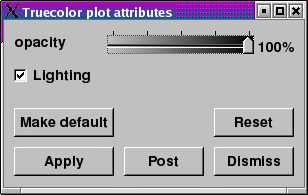
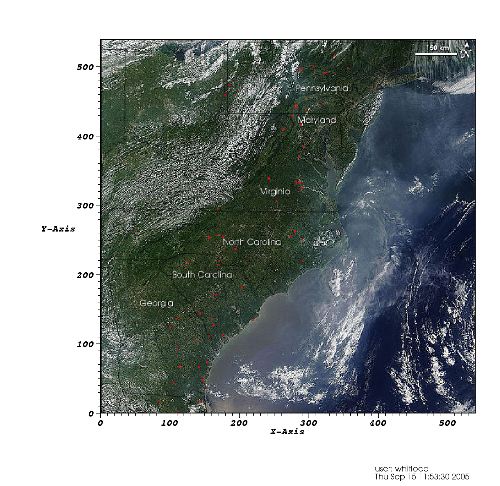

The Truecolor plot, shown in figure, is used to plot images of observational or experimental data so they can be compared to other plots, possibly of related, simulated data, in the same visualization window. The Truecolor plot takes in a color variable, represented in VisIt as a three or four component vector, and uses the vector components as the red, green, blue, and alpha values for the plotted image. This allows you access to many more colors than other plots like the Pseudocolor plot, which can be used only to plot a single color component of an image.
|  |
| Figure 54 |
|  |
| Figure 55 |